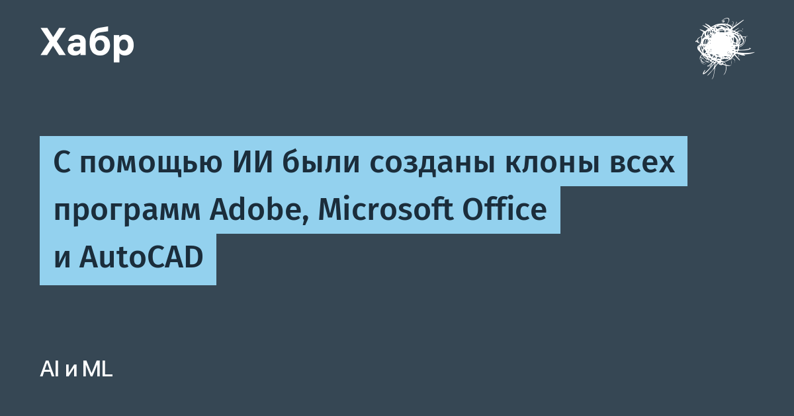

Проект ArtCraft выложил на GitHub серию открытых программ, повторяющих популярные продукты Adobe, Microsoft и Autodesk, — и делает это с помощью ИИ. Уже существуют PhotoCraft (аналог Photoshop), VectorCraft (Illustrator), FilmCraft (Premiere), LightCraft (Lightroom), PdfCraft (Acrobat), EffectCraft (After Effects) и DesignCraft (InDesign). Чуть дальше от финала — WordCraft, GridCraft и DeckCraft (аналоги Word, Excel и PowerPoint), а также CadCraft — подражание AutoCAD.
Весь код написан на Rust, лицензии — Apache 2.0 и MIT: бесплатно, без подписки и телеметрии. Программы работают на Windows, macOS, Linux и прямо в браузере, а PhotoCraft открыто позиционируется как чистая переработка — без заимствования кода Photoshop. Все приложения поддерживают протокол MCP, так что управлять редактором может не только человек, но и ИИ-ассистент. Только launcher проекта собрал более 900 звёзд на GitHub за считаные дни.
Обсуждение уже прошло через Hacker News и профильные форумы, а энтузиасты на YouTube насчитали в клонах десятки тысяч строк кода, появившихся примерно за неделю. Отдельного официального анонса у Adobe и Microsoft, разумеется, нет — пока они наблюдают за происходящим. Юридическая чистота держится на том, что код пишется заново, хотя вопросы к сходству интерфейсов законодатели ещё обсудят.
В офисной софте у нас свой путь: «МойОфис» и «Р7-Офис» входят в реестр российского ПО и работают в госорганах и на предприятиях. Сходство с ArtCraft здесь в одном — обе истории выросли из желания независимости от платных подписок Adobe и Microsoft; инструменты при этом выбраны совсем разные.
История ArtCraft — очередной сигнал, что ИИ уже умеет производить не прототипы, а большие живые кодовые базы под зрелые задачи. Для гигантов от подписочного софта это неприятный тест на прочность: если бесплатный клон на Rust работает — платёж за лицензию нужно чем-то оправдывать.